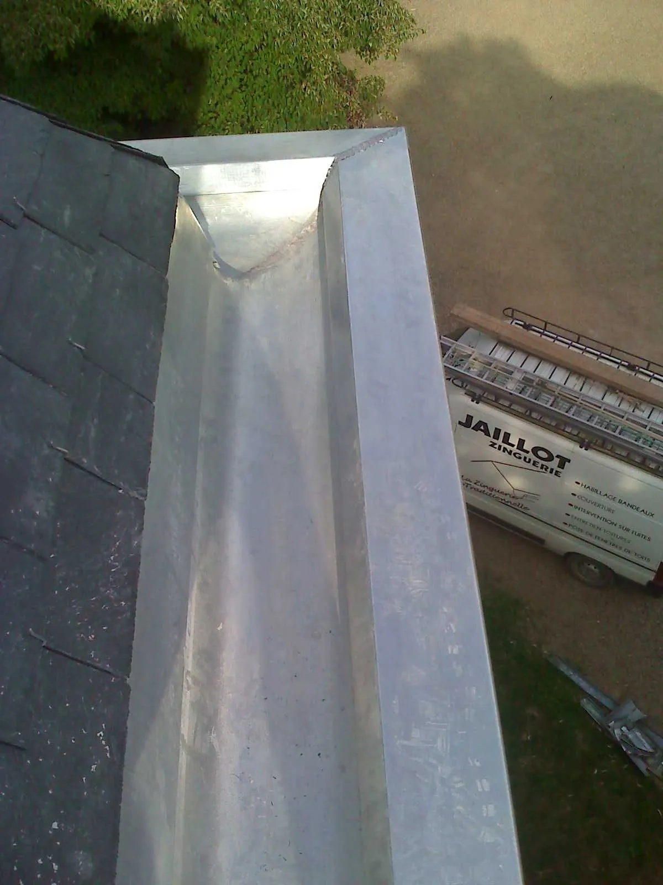
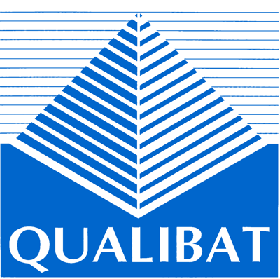
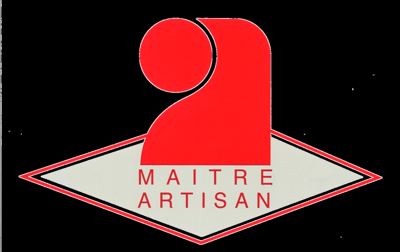
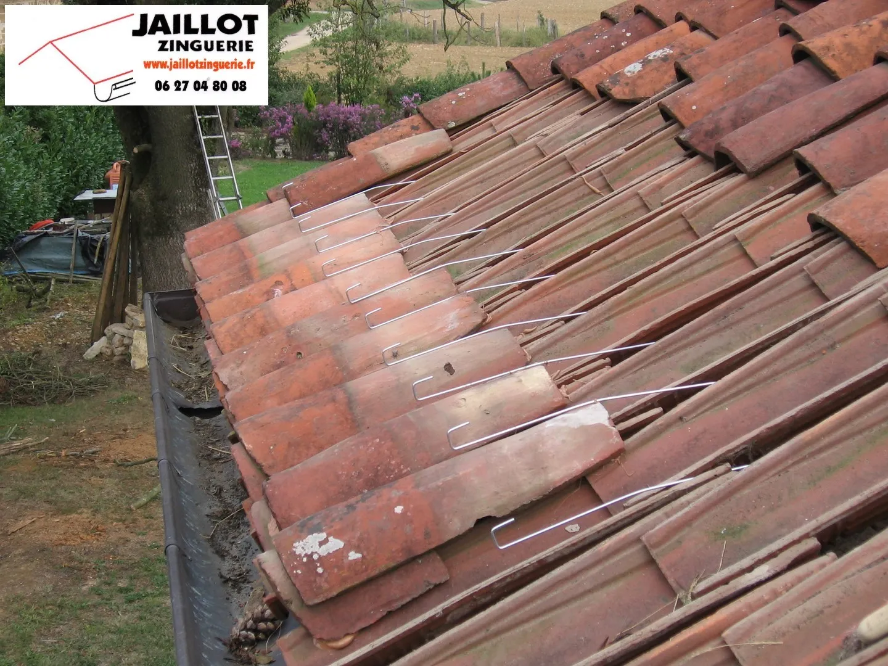

Votre toit mérite un spécialiste



Chaque matériau a ses règles de l’art, en harmonie avec votre toiture.
Zinc · cuivre · plomb


La zinguerie traditionnelle, aux portes de la Dombes. Zinc, cuivre, plomb.
Laurent Jaillot, maître artisan couvreur zingueur, a appris le métier dans différentes régions. Il vous offre un travail personnalisé, de qualité, qui allie longévité et esthétique de votre toit.




Chaque matériau a ses règles de l’art, en harmonie avec votre toiture.
Zinc · cuivre · plomb

Google · 2021« Professionnel sérieux et de confiance. »
Un travail personnalisé, adapté à votre toiture et à vos besoins.
Les méthodes traditionnelles, soudures à l’étain et au plomb.
Zinc, cuivre, plomb, aluminium laqué ou tôle laquée.
Un toit étanche qui dure, et qui reste beau.